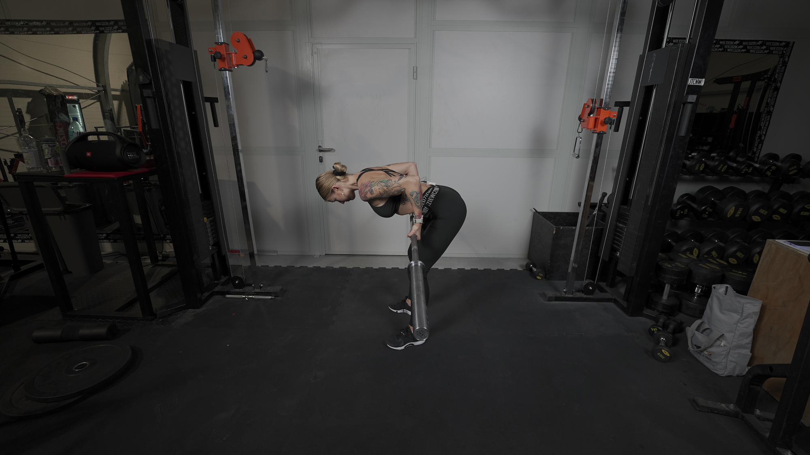
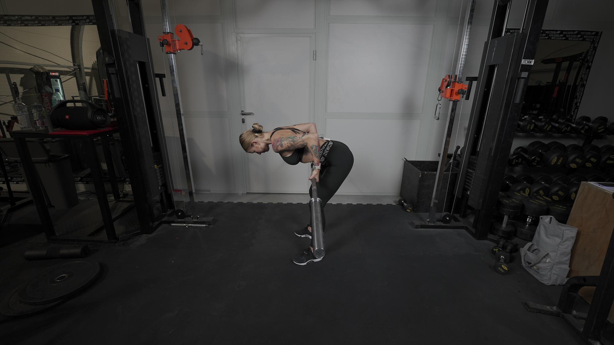

WIOSŁOWANIE SZTANGĄ
 

1. Ustaw sztangę na stojakach, abyś mogła swobodnie ją ściągnąć.
2. Złap sztangę podchwytem i zrób 2 kroki w tył.
3. Ściągnij łopatki i obniż ich pozycję, napnij brzuch.
4. Wypchnij biodra w tył i pochyl tułów, delikatnie oddal sztangę od swoich nóg.
5. Głowa powinna stanowić przedłużenie tułowia.
6. Rozpocznij ruch przyciągania sztangi do brzucha, prowadząc łokcie blisko ciała.
7. Opuść sztangę do pozycji początkowej, kontrolując ruch.